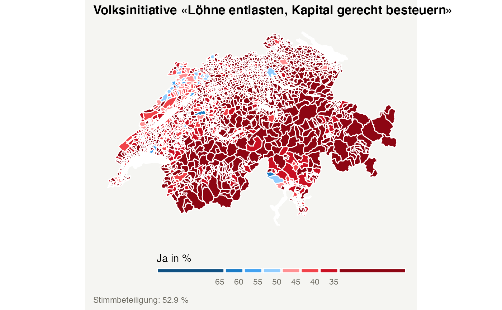
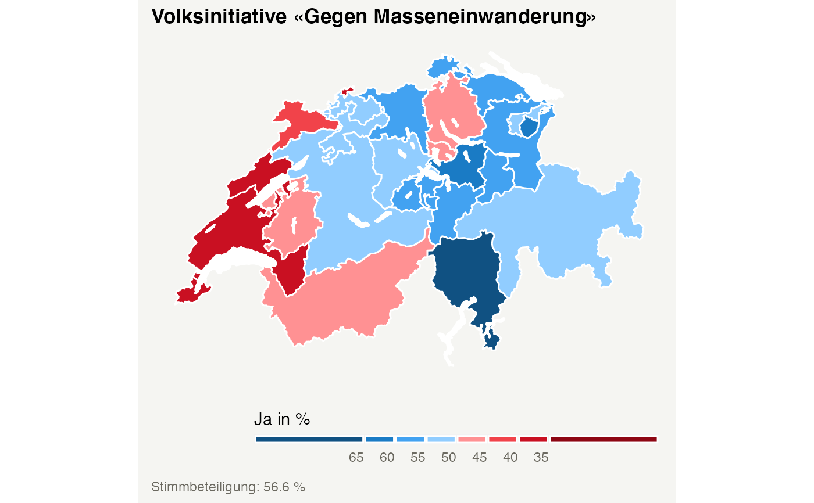

plot_nationalvotes plots the results of national votes in a choropleth map using ggplot2.
plot_nationalvotes( votedate = NULL, vote_id = NULL, geolevel = "municipality", measure = "result", standardize = T, lakes = T, language = "DE", theme = "srf" )
| votedate | date of the ballot. Default: most recent ballot available. |
|---|---|
| vote_id | id of the vote. Default: first id mentioned in the data set. |
| geolevel | geographical level. Options: "canton", "district", "municipality" or "zh_counting_districts". |
| measure | measure to color the administrative units. Options: "result" for the yes vote share or "turnout" for the voter turnout of a given vote. |
| standardize | if |
| lakes | if |
| language | defines the language. Options: "DE" for German, "FR" for French, "IT" for Italian or "RM" for Romansh. |
| theme | defines basic appearance of the map. Five options are available: "srf" for a theme inspired by the plots of Swiss Radio and Television, and "A" to "E" for the viridis color scales magma, inferno, plasma, viridis and cividis. |
a ggplot object
# Plot the most recent national vote plot_nationalvotes()# \donttest{ # Plot a specific national vote at cantonal level plot_nationalvotes( votedate = "2014-02-09", vote_id = 5800, geolevel = "canton" )# }